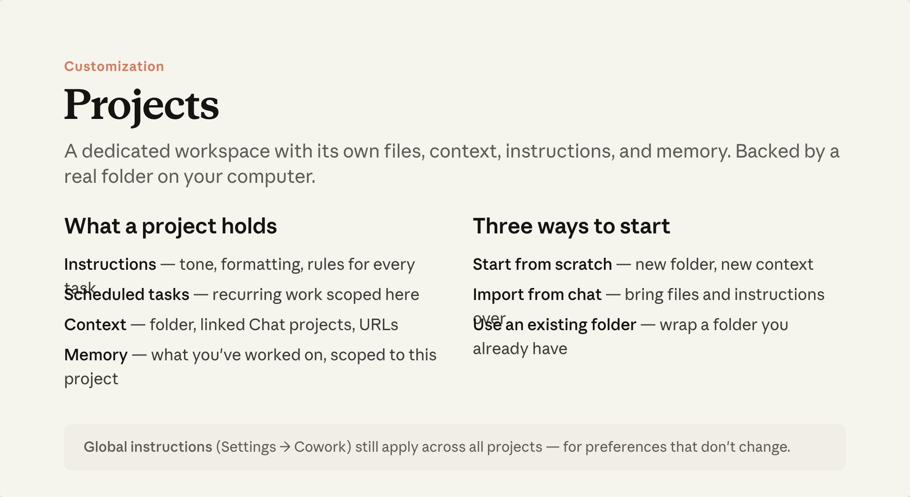

예상 소요 시간: 10분
학습 목표
이 레슨을 마치면 다음을 할 수 있습니다:
- 매번 다시 설명하지 않고도 모든 세션에 걸쳐 유지되는 Cowork 컨텍스트 제공하기
- 프로젝트의 지침 패널을 사용하여 Claude에게 작업 방식 알려주기
- 어디에나 적용되는 기본 설정을 위한 전역 지침 설정하기
이것이 중요한 이유

각 Cowork 작업은 새로 시작됩니다—Claude는 한 작업에서 다음 작업으로 대화 기억을 이어가지 않습니다. 컨텍스트가 이어지는 방식은 프로젝트 입니다: 컴퓨터의 실제 폴더를 기반으로 하는 이름 있는 작업 공간으로, 그 안에서 시작하는 모든 작업에 지침과 기억이 유지됩니다.
Chat에서 프로젝트를 사용한다면, Cowork 프로젝트도 비슷하게 작동합니다—하지만 컴퓨터 로컬에 존재하며 작업 중심으로 구성됩니다. 기억의 범위도 다릅니다: Chat은 모든 대화에 걸쳐 기억하지만, Cowork 프로젝트의 기억은 해당 프로젝트 안에만 유지됩니다.
프로젝트는 Cowork 사이드바에 있습니다. 처음부터 새로 시작하거나, Chat 프로젝트에서 가져오거나(파일과 지침이 이전되며 동기화는 단방향), 이미 컴퓨터에 있는 폴더를 연결할 수 있습니다. 전체 설정 가이드 .
지침에 넣을 내용
프로젝트에 들어가면 오른쪽 패널에 지침 섹션이 있습니다. 여기에 입력한 내용은 해당 프로젝트에서 시작하는 모든 작업에서 읽힙니다. 유용하게 쓰이는 것들:
- 관련된 사람들 — 이름, 역할, 연락 방법 등, "이걸 Rachel에게 보내줘"가 의미 있게 되도록
- 파일 위치 — "계약서는 ./Contracts에, 이전 보고서는 Drive /archive/[연도]에"
- 출력 형식 설정 — "초안은 .docx로, 최종본은 PDF로, deliverables 하위 폴더에 저장"
- 프로젝트 특정 규칙 — "전체적으로 미터법 단위 사용, 모든 수치에 출처 인용"
깔끔하게 정리할 필요 없습니다. 몇 줄이면 충분합니다. 효과: 약어가 통하기 시작합니다. 지침에 누가 누구인지, 어디에 무엇이 있는지 명시되면 "클라이언트에게 보내줘"나 "Q3 보고서가 있던 곳에 파일 저장해줘"가 구체적인 의미를 갖게 됩니다.
Claude는 프로젝트 폴더의 모든 내용도 읽습니다. Claude가 유지하길 원하는 컨텍스트—진행 중인 메모, 늘어나는 용어 사전, 발전하는 모든 것—는 파일로 저장하세요. "방금 다룬 내용을 내 메모 파일에 추가해줘"는 파일에 적용됩니다; 지침 패널은 직접 설정하는 것입니다.
전역 지침
프로젝트 간에 변하지 않는 설정—역할, 기본 출력 형식, "삭제 전에 확인하기" 같은 고정 규칙—은 전역 지침을 사용하세요. 설정 → Cowork → 전역 지침에서 설정합니다. 이는 프로젝트 내부든 아니든 모든 Cowork 작업에 적용됩니다.
제대로 작동하는지 확인하기
프로젝트 안에서 이렇게 물어보세요: "여기서 내가 어떻게 작업하는지 알고 있는 것을 말해줘." 지침과 기억이 제대로 반영되고 있는지, 무엇이 빠져 있는지 확인할 수 있습니다.
실제로 해보기
현재 작업 중인 것으로 프로젝트를 만들어 보세요—기존 폴더가 있다면 사용하세요. 지침에 몇 줄 추가하세요: 주요 관계자가 누구인지, 관련 파일이 어디 있는지, 출력 형식 설정 하나. 안에서 작업을 시작하고 입력 바에 폴더가 이미 설정되어 있는 것을 확인해 보세요.
다음 내용
다음 모듈에서는 플러그인이 Cowork에 도메인 전문성을 추가하는 방법을 배웁니다—해당 분야의 전문가처럼 작업에 접근하도록 합니다.
피드백
피드백을 여기 에서 공유해 주세요.
저작권 및 라이선스
Copyright 2026 Anthropic. All rights reserved.